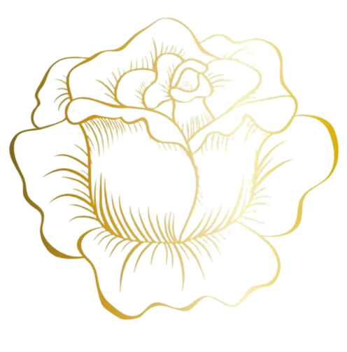

Let's explore the
temples of Kerala
Lord Ayyappa: Dedicated to Lord Ayyappa, the temple symbolizes the unity of Shaivism and Vaishnavism, as Ayyappa is considered the son of Shiva and Mohini.
Pilgrimage: One of the largest annual pilgrimages globally, attracting millions of devotees, particularly during the Mandala Pooja and Makaravilakku seasons.
Traditional Kerala Architecture: The temple structure follows traditional Kerala architectural styles, with a tiled roof, wooden carvings, and a gold-plated sanctum.
Sannidhanam: The main temple complex is known as Sannidhanam, surrounded by various other shrines, including those dedicated to Malikappurathamma and Ganapathi.
Prasadam: The temple offers sacred food, including "Aravana Payasam" and "Appam", which are considered divine blessings.
Annaprasadam: Free meals are provided to pilgrims at the temple complex, typically consisting of traditional Kerala dishes like rice, sambar, and vegetables.